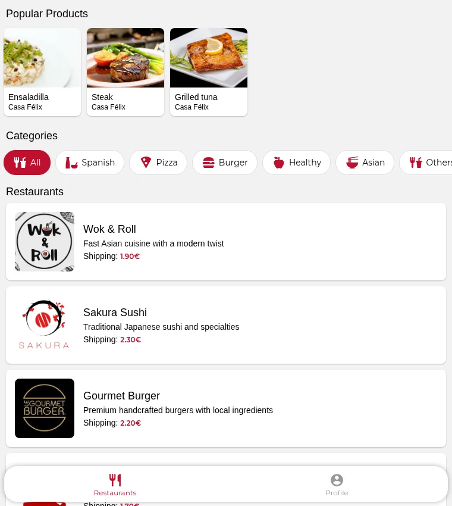
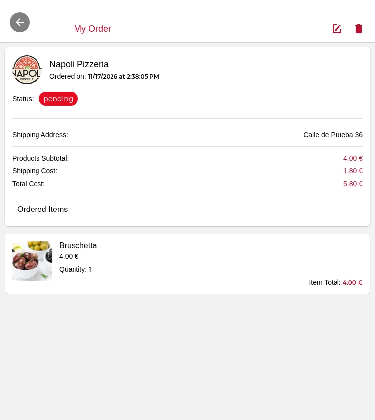

DeliverUS
Proyecto colaborativo de pedidos de restaurantes, con una aplicación para clientes y otra para propietarios.
Demo gratuita con datos ficticios. Los pedidos y las ediciones se guardan sólo en este navegador. Puedes cambiar de rol para probar el ciclo completo y restaurar la demo cuando quieras.
Las aplicaciones


